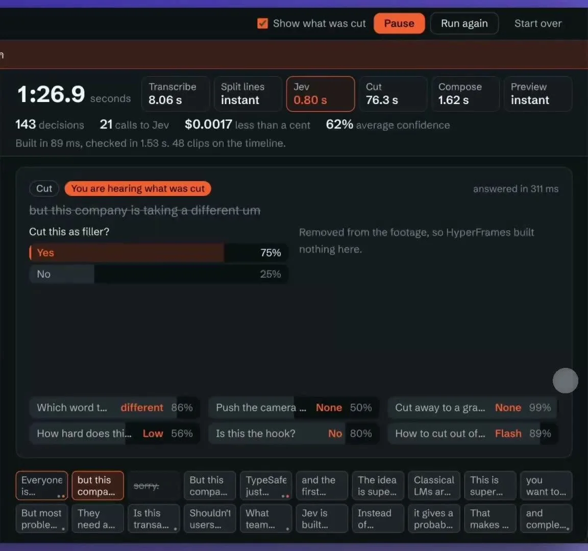
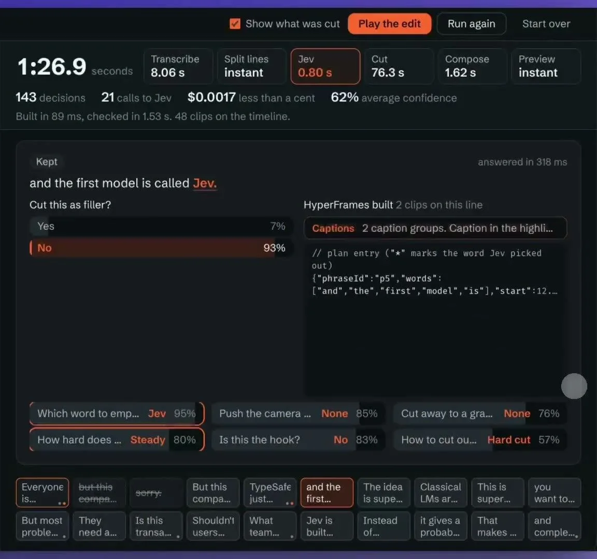

体験
判断は一文ごとに、提案として出る。動画は「Show what was cut」で切った部分を見せられ、元と編集後を行き来できるので、判断を確かめたり元に戻したりしやすい。
- 一文に複数の質問が並び、その判断が編集操作（カット、強調、ズーム）に変換される様子が、行ごとに読み取れる。
- 上部には 143 decisions、21 calls to Jev、$0.0017、62% average confidence と出る。判断の数と呼び出しの数が違うのは、1回の呼び出しで複数の質問に答えているためと読める。
- 62%という平均のconfidenceは、編集の正しさの割合ではない。
- 編集ソフトが元々持つプレビューと取り消しに乗っているので、誤判定の代償が小さい。
キャプチャ
{kind=link}

（原寸の画像を開く）{kind=link}

（原寸の画像を開く）見る箇所上部の処理時間と判断数、中央の質問と確率（Yes / No）、下段の複数の質問、最下段の文の一覧
入力から画面の変化まで
-
判断への入力
話している動画の文字起こしを、一文ごとに区切ったもの。
-
Jevの判断
一文ごとに複数の質問に答える。「Cut this as filler?」は Yes 75% / No 25%、他に強調する単語、カメラを寄せるか、フックか、難易度、グラフへ切り替えるか、切り替え方、など。
-
結果がUIをどう変えるか
切った文には「You are hearing what was cut」と付き、HyperFramesは何も作らない（1枚目）。残した文は「Kept」と示され、HyperFramesが2つのクリップ（キャプション）を作る様子が出る（2枚目）。掲載範囲の外にある動画の左側では、元と編集後を切り替えられ、「72.2秒が65.5秒になり、Jevは2行を切った」と出る。
- 判断型の見立て
- 複合推定
- Yes/Noの質問と、複数の選択肢から選ぶ質問が混在して表示されているため、そう見立てた。型名は画面に明記されていない。
Jevとの適合
短い文ごとの複数の小さな問いを並べるのはJevに合い、結果を確認できる編集の領域と相性がよい。ただし、カットの妥当性や、話の流れを壊していないかの評価はこの動画からは分からない。
確認範囲と未確認事項
作者の投稿動画から静止画を確認。編集対象の映像に人物が映るため、掲載フレームは判断パネルの部分に切り出した。「悪いテイクを切る」「ほぼ瞬時」という評価は作者の印象で、編集結果の品質は評価していない。
- 確認済み動画から得た2枚の静止画に見える質問、確率、処理時間、判断数、費用、切った文の表示
- 未検証カットの品質、他の映像での動作、実際の編集時間の短縮、HyperFramesとの連携の詳細
- 推定扱い各質問の型（Yes/NoはNoul、他はChoiceと見立て）
- 引用X投稿は2026-09-20（UTC）。動画から判断パネルのみ切り出して引用（映像の人物は除外）。権利は作者に帰属する